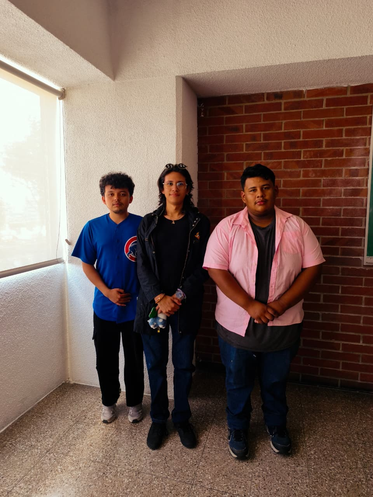

UNIVERSIDAD MESOAMERICANA · MATEMÁTICA IV
Del Sistema Solar
a una base en Marte.
El recorrido muestra cómo el cálculo multivariable conecta el relieve, la elección de una llegada, el movimiento del rover y la capacidad de un depósito dentro de un mismo modelo tridimensional.
Documentos del proyecto
Descargar toda la documentación en ZIP
Informe técnicoAnexo matemáticoCinco estudios aplicadosPlano integradoPresentación de 22 desarrollosPresentación en PDF

Equipo
Carlos Haroldo Rodriguez FuentesCarné 202574501
Juan Carlos Boteo GranadosCarné 202558502
Davis Javier Rivera ArocheCarné 202558500
Universidad Mesoamericana · Facultad de Ingeniería
Docente: ScD. Juan Carlos Ruiz Castillo